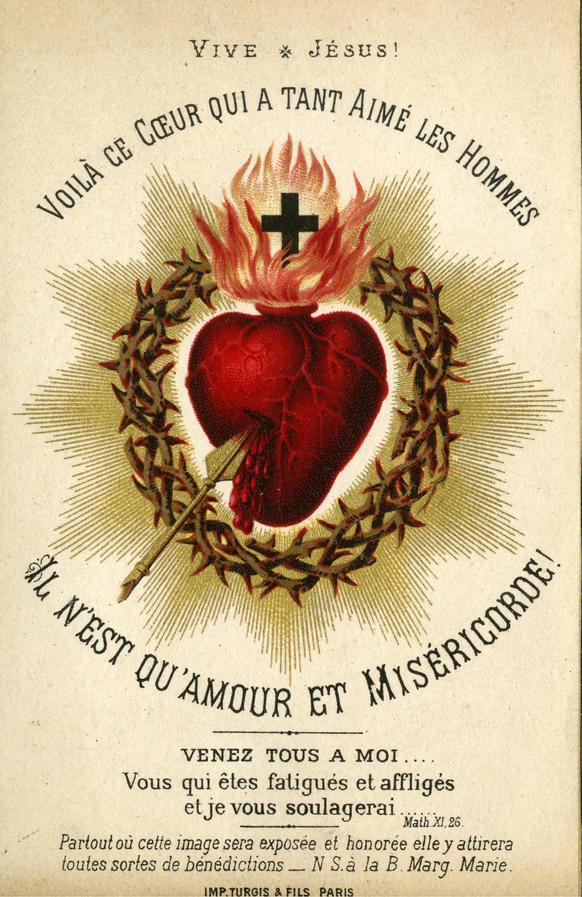
Приходите на брачный пир!
Блаженны званые на брачную вечерю Агнца. (Откр 19,9)
Царство Небесное подобно человеку царю, который сделал брачный пир для сына своего, и послал рабов своих звать званых на брачный пир; и не хотели прийти. Опять послал других рабов, сказав: «скажите званым: вот, я приготовил обед мой, тельцы мои и что откормлено, заколото, и всё готово; приходите на брачный пир». Но они, пренебрегши то, пошли, кто на поле своё, а кто на торговлю свою; прочие же, схватив рабов его, оскорбили и убили их. Услышав о сём, царь разгневался, и, послав войска свои, истребил убийц оных и сжёг город их. Тогда говорит он рабам своим: «брачный пир готов, а званые не были достойны; итак, пойдите на распутия и всех, кого найдёте, зовите на брачный пир». И рабы те, выйдя на дороги, собрали всех, кого только нашли, и злых и добрых; и брачный пир наполнился возлежащими. Царь, войдя посмотреть возлежащих, увидел там человека, одетого не в брачную одежду, и говорит ему: «друг! как ты вошёл сюда не в брачной одежде?» Он же молчал. Тогда сказал царь слугам: «связав ему руки и ноги, возьмите его и бросьте во тьму внешнюю; там будет плач и скрежет зубов»; ибо много званых, а мало избранных. Мф 22,1-14
Эта брошюра Марианского движения священников и мирян представляет Святую Церковь как Невесту Христа: притчу Иисуса о царском брачном пире, тайну тройственной святой Церкви, брачную жизнь многих святых, а также Святую Мессу как солнце и брачный пир нашей жизни – со свидетельствами благодати и гонений на Церковь в наше время.
Содержание
- Предисловие
- Тайна тройственной святой Церкви
- Брачное томление
- Святая Месса – солнце нашей жизни
- Приходите на брачный пир!
- Слёзы Матери
- Тихий путеводитель к католической вере
- Рыбы в сети Церкви
- Преследуемая Церковь
- Обращение одного актёра
- Божественная звезда и брачная душа
- Молитва о духовных призваниях
Предисловие
Бог замыслил для людей лишь один путь к вечному блаженству, и это путь, который сам есть Иисус Христос, воплотившийся Сын Божий. Он сказал: Никто не приходит к Отцу, как только через Меня. Я есмь путь. (Ин 14,6) Иисус проложил нам этот путь любящей отдачей Своей жизни на кресте как выражением высочайшей любви и прославления Отца (ср. Ин 17,1-5) и как умилостивительной жертвой наиприятнейшего благоухания для искупления людей (ср. Еф 5,2). Как единственный и вечный Первосвященник человечества, Христос оставил Своей Церкви жертву Своей любви на алтаре Креста действительно и по существу в тайне Евхаристии. При этом Христос неразрывно связал присутствие Своей крестной жертвы, вновь делаемой действительной, со Своим брачным пиром. Этот брачный пир Он совершает, давая Свою Плоть и Кровь Своей Невесте, Церкви, и каждой верующей и любящей душе. Величайший акт любви во всей истории творения и человечества – священническая отдача Иисуса Христа на кресте. Здесь, на земле, в таинстве Евхаристии она совершается до Его возвращения.
Блаженны званые на брачную вечерю Агнца. (Откр 19,9) Эти слова открывают глубочайший смысл цели, для которой Бог сотворил людей. Он создал их, чтобы сделать их причастниками Своей собственной божественной жизни, а эта жизнь – сверхъестественная, вечная жизнь. Причастие божественной жизни означает высочайшее блаженство и радость; за этим стоит образ брачного пира. Это блаженное созерцание несказанного и непостижимого существа самого Бога. Вечная жизнь – это жизнь глубочайшего единства творения со своим Творцом. Бог есть любовь (1 Ин 4,8), и потому с Ним можно быть единым только в любви. Вечное блаженство на небе – это наивысшее возможное исполнение первой и важнейшей заповеди: любить Бога всем сердцем, всей душой, всем разумением и всею силой (ср. Втор 6,4-5; Мк 12,30).
Этот акт любви так велик, что пребудет на всю вечность как память и как небесная литургия, о чём возвещает нам Откровение (Апокалипсис) в образе брачной вечери Агнца. Поэтому Христос и на небе пребывает Первосвященником на веки вечные (ср. Евр 7,24).
Иисус Христос, Вечный Первосвященник, – единственный путь к вечному блаженству. Однако Он неразрывно связал этот путь с истиной, ибо Сам есть истина (ср. Ин 14,6). Ради свидетельства («martyrein» по-гречески) истины Он пришёл в мир (ср. Ин 18,37), и Он Сам в Своей личности есть Свидетель («martys» по-гречески), Верный («fidelis») и Истинный («verus») (ср. Откр 3,14). Отсюда видно, что путь к вечному блаженству, к брачной вечере Агнца, – это путь безусловной веры и верности истине, вплоть до мученичества. Без веры, то есть без верного держания за истины, открытые Богом, угодить Богу невозможно (ср. Евр 11,6), то есть невозможно попасть на небо.
Нет ничего более чуждого смыслу Иисуса Христа и Евангелию, чем понимать христианство и путь на небо как сентиментальную прогулку, устроенную по индивидуальному вкусу, или как роскошное меню à la carte и жить так. Такое христианство было бы без креста, без жертвы, без послушания ясной воле Божией, без самоотречения. Значит, оно было бы христианством без истинной сверхъестественной любви и, следовательно, без истинной радости, без подлинного брачного пира Агнца, ибо Агнец по своей сути – существо, невинно принесённое в жертву. Такое христианство было бы иллюзией. Это было бы христианство «эго», а значит – величайшая противоположность Христу и истинному христианству, то есть его самая отвратительная карикатура.
Церковь с самого начала сознавала опасность, которую несёт такое иллюзорное и карикатурное христианство без креста и без истины, а значит, и без любви. Поэтому первые христиане и все поколения истинно католических верующих всегда принимали к сердцу слова апостола Иуды (Фаддея): Подвизайтесь за веру, однажды преданную святым. Помните предсказанное Апостолами Господа нашего Иисуса Христа; они говорили вам, что в последнее время появятся ругатели, поступающие по своим нечестивым похотям. Это они вызывают разделения – люди душевные, не имеющие духа! Вы же, возлюбленные, назидая себя на святейшей вере вашей, молясь Духом Святым, сохраняйте себя в любви Божией, ожидая милости от Господа нашего Иисуса Христа, для вечной жизни. Помилуйте сомневающихся, исторгайте их из огня и спасайте. (Иуд 3,17-23)
Величайшая и действеннейшая помощь на долгом, трудном и опасном пути к вечному блаженству – это сам Иисус Христос, и притом в Его даре Святой Жертвы Мессы, в истинном присутствии Его крестной жертвы и в пище Его Тела и Крови. Это величайшее сокровище, истинное духовное солнце Церкви. Да, уже здесь, в юдоли слёз, это предвкушение брачной вечери Агнца в вечной жизни.
Святая Жертва Мессы и Святое Причастие – также самые действенные средства для того, чтобы душа росла в истинной вечной любви к Богу, в брачной любви к Нему. А это, в свою очередь, означает не что иное, как святость жизни.
Бог пожелал, чтобы крестную жертву вместе с пресуществлением хлеба и вина в Тело и Кровь Христа могли совершать в таинстве только священники. Без священников нет Жертвы Мессы и нет Святого Причастия, и тогда угасает истинное духовное солнце в жизни Церкви. Однако нам нужны не просто священники, а прежде всего священники, живущие святостью. Христос, целомудренный, истинный и милосердный Вечный Первосвященник, хочет и в нашем таком тёмном и смятенном времени снова ходить через Своих священников по нашим улицам, учить истине заблуждающихся и сомневающихся, утешать страдающих, подавать прощение грехов кающимся грешникам и прежде всего приносить Жертву Мессы. Поэтому священники, Его человеческие орудия, должны быть также целомудренными, готовыми к жертве, смиренными и всегда свидетельствовать об истине, вплоть до мученичества.
Напоминание об истине о призвании всех христиан к святости, и прежде всего священников, о центральном значении Святой Евхаристии в жизни Церкви – через всё более глубокое верующее проникновение в истину – и о Святой Жертве Мессы, совершаемой сообразно Божественному величию и священнодейственно, с плодотворным и благоговейным принятием Святого Причастия, с чистым, верующим и смиренным сердцем: в этом и должны были бы состоять подлинный смысл и цель Второго Ватиканского собора согласно намерению большинства отцов Собора.
Только подлинное обновление из тайны Евхаристии согласно неизменному смыслу Церкви и всех святых даст в Церкви наших дней святых: святых детей, святых юношей, святых семей, святых невест Христа, посвятивших себя Богу, святых монашествующих и прежде всего святых священников. Лишь тогда Церкви будет дарована истинная духовная весна. На эту весну мы твёрдо надеемся, и она уже есть и в наши дни, начинаясь прежде всего в душах, которые любят Христа глубокой брачной любовью и сделали Евхаристического Христа средоточием своей жизни.
Настоящая книжечка «Приходите на брачный пир!» безусловно станет конкретной духовной помощью для столь желанного истинного евхаристического обновления Церкви и даст многим душам свет, утешение и побуждение к любви к Богу и ближнему и к святости.
Пусть Бог благословит распространение этой маленькой драгоценной книжечки многими духовными плодами!
Пусть, соединившись с любимой Богородицей Марией, первой дарохранительницей воплотившегося Спасителя, мы чаще повторяем слова старого известного причастного песнопения, которые пусть укрепят в нас веру и сверхъестественную любовь к нашему Евхаристическому Господу:
Иисус, Иисус, приди ко мне! Как жажду я Тебя!
Лучший друг души моей, когда же я соединюсь с Тобою!
Тысячекратно желаю Тебя, жизнь без Тебя – мука.
Тысячекратно вздыхаю к Тебе: о Господи Иисусе, приди ко мне!
Нет в мире радости, которая удовлетворила бы моё сердце.
Одна только Твоя любовь, Господи, может обрадовать всё моё сердце!
Правда, я, о Господи, не так чист, чтобы Ты вошёл ко мне;
но одно слово из Твоих уст – и душа исцелится.
Горячо тоскую по Тебе: Иисус, Иисус, приди ко мне!
Возьми всё моё сердце для Себя и владей им вечно. Аминь.
Пусть Бог щедро благословит авторов, распространителей и читателей этой книжечки!
29 июня 2019 года, в торжество верховных апостолов Петра и Павла
+ Афанасий Шнайдер, вспомогательный епископ архиепархии Пресвятой Девы Марии в Астане (Нур-Султан)
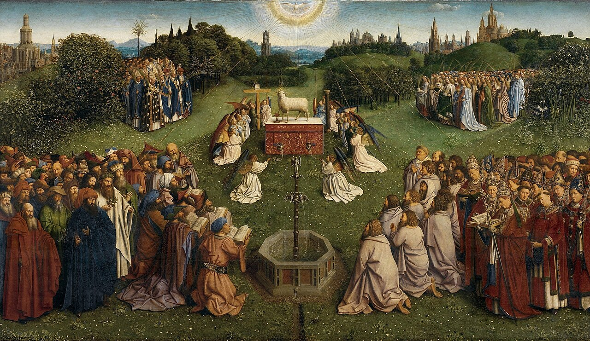
Поклонение Агнцу (Гентский алтарь, Ян ван Эйк)
Тайна тройственной святой Церкви
Тройственная святая Церковь состоит из воинствующей, страдающей и торжествующей Церкви. Христиане на земле – это воинствующая Церковь, души в чистилище – страдающая, а блаженные на небе – торжествующая. Все три вместе своей тесной связью со Христом образуют Царство Божие. В Символе веры мы называем это общение «общением святых», потому что все должны быть соединены со Христом, своим Женихом, через освящающую благодать.1
Общение святых на земле дает нам участие во всех сокровищах благодати Церкви. Соединение со святыми на небе дает нам участие в их заслугах и помощь через их ходатайство перед Богом. Общение с чистилищем – большая помощь для нас и для душ в чистилище, которые так мучительно страдают. Через Святые Мессы, индульгенции, молитвы и добрые дела, которые мы приносим за них в жертву, мы можем сократить их муки, а они, в свою очередь, показывают нам свою великую благодарность, настойчиво ходатайствуя перед небом за все наши нужды.2
1 Что Христос есть Жених Церкви, было предвозвещено пророками, и Иоанн Креститель возвестил это. Сам Господь назвал Себя «Женихом» (Мк 2,19). Вместе с тем Он, как подчеркивает апостол Павел, есть «глава тела Церкви» и «возлюбил Церковь и предал Себя за неё» (Кол 1,18; Еф 5,25). Точно так же апостол представляет Церковь и каждого верующего, который является членом Тела Христова, как невесту, которую он «обручил» Христу Господу, чтобы она была одним духом с Ним (ср. 1 Кор 6,15-17; 2 Кор 11,2) (ср. ККЦ 796)
2 Души в чистилище принадлежат к глубочайшим знатокам земной нужды и человеческого бытия. Поскольку они живут в опыте Бога, который нам ещё недоступен, они полны силы любви к нам и особенно верные друзья тех людей, которые молитвой и жертвой сокращают им путь к блаженному созерцанию Бога. (св. Джон Фишер)
Возрадуемся и возвеселимся и воздадим Ему славу.
Ибо наступил брак Агнца, и жена Его приготовила себя.
И дано было ей облечься в виссон чистый и светлый.
Виссон же есть праведность святых.
И некто сказал мне: «Напиши: блаженны званые на брачную вечерю Агнца».3 Откр 19,7-9
3 Иначе, как в мистическом Теле Церкви, главой которого является Христос, а членами которого мы являемся, мы не можем обрести наше спасение. […] Нет иного пути и иных врат для нас. (св. Екатерина Сиенская)
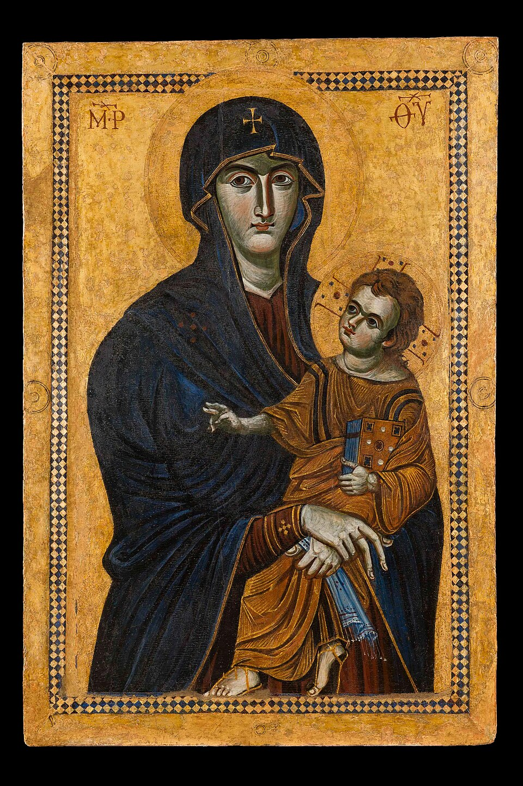
Мария, Матерь Церкви⁴
Брачное томление
Всё Священное Писание пронизано биением тоскующей любви Божией, которая непрестанно стучится в часто такие ожесточённые и закрытые сердца сынов человеческих, чтобы в милосердии привлечь их к Себе. Эта брачная любовь особенно выразительно открывается в образе свадьбы, которую Бог уже подготовил в Ветхом Завете и которая через Иисуса Христа, пришедшего в этот мир как Мессия и Жених, была торжественно совершена в чудесном обмене любовью.
И обручу тебя Мне навек, и обручу тебя Мне в правде и суде, в благости и милосердии. И обручу тебя Мне в верности, и ты познаешь Господа. Ос 2,21-22 (Синод. 2,19-20)
Свадьба – глубочайшая тайна всего видимого и невидимого творения, а значит, и глубочайшая тайна Церкви, которая через странствие этого времени идёт навстречу своему Жениху с брачной тоской.
Глубоко тронутые тяжкими бедствиями, которые угрожают нашей Матери Церкви изнутри и извне и тяжело ранят её, мы хотим этой маленькой брошюрой бросить искры тоски по небесной свадьбе во многие человеческие сердца, чтобы их любовь ко Христу в тайне Его мистического Тела снова разгорелась и чтобы они с горящими светильниками вышли навстречу Жениху и Невесте. (ср. Мф 25,1-13)
Несчётное множество святых уже достигло совершенства на этом пути к небесной свадьбе и теперь молится за нас у престола Божия, чтобы и нам когда-нибудь было позволено войти в этот великий пиршественный зал вечной радости неба.
Когда мы заглядываем в жизнь святых, нас вовлекает атмосфера Божественной благодати, которая буквально сияет из глаз этих влюблённых в Бога душ. Они позволили полностью преобразить себя брачной тайной любви Божией и погрузились в такое блаженство, о котором земной мир даже не догадывается.
В следующих главах некоторые из этих светозарных огненных столпов Церкви проведут нас на пути к Богу, ради славы Которого и спасения душ они полностью сгорели.
Пойди, я покажу тебе невесту! Откр 21,9
Мария, Матерь Церкви, Твои мы на время и на вечность.
Через Тебя и с Тобою хотим мы теперь и навсегда всецело принадлежать Иисусу. Аминь.
4 Мария как Матерь и Покровительница Церкви и Пресвятой Евхаристии, а также как Царица Ангелов. В окружении семи архангелов Мария стоит в корабле Церкви вместе со всеми верующими в борьбе за спасение душ от злого врага. Святые ангелы и святые неба вместе с верными Церкви образуют Царство Марии в подготовке к конечной победе Христа на земле. (Картина маслом Росвиты Биттерлих)
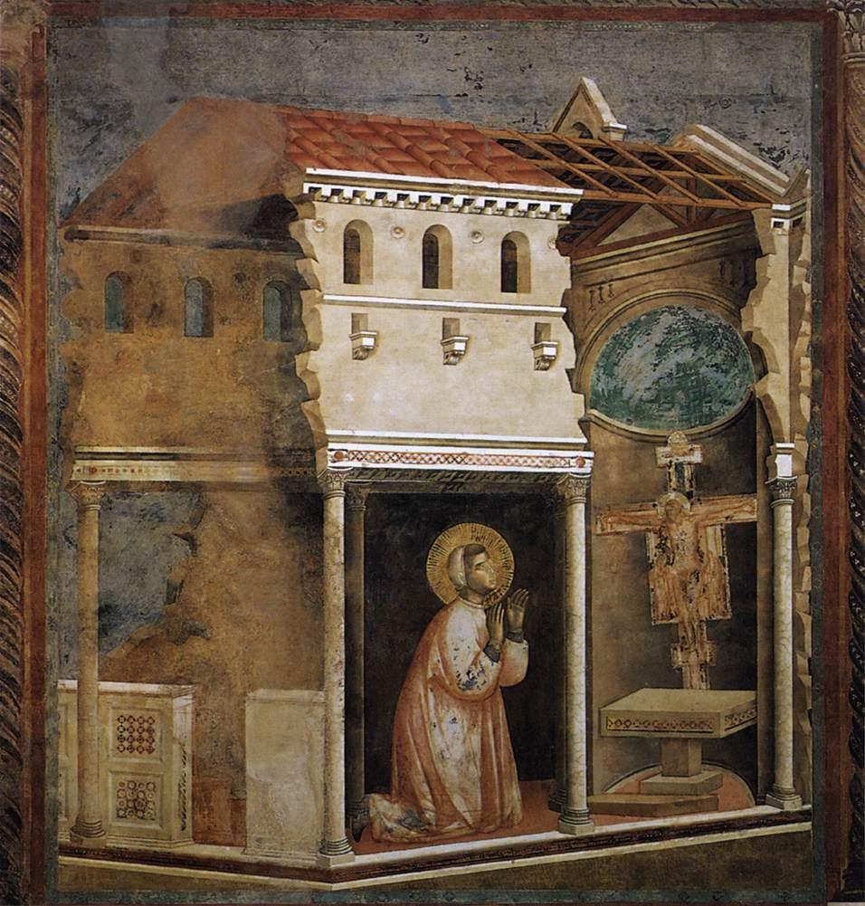
Франциск молится перед крестом в Сан-Дамиано.
Святой Франциск и раненая Невеста
Когда св. Франциск Ассизский (1181/82 – 1226) однажды, ведомый Духом, вошёл в церковку Сан-Дамиано, чтобы помолиться, на него снизошли непривычные посещения Духа, и тотчас к нему обратился образ распятого Христа: уста на образе пришли в движение. Образ позвал его по имени и сказал: Франциск, иди и восстанови Мой дом, который, как видишь, совсем разрушился! […] С того часа, как Возлюбленный говорил с ним, святую душу его пронзило сострадание к Распятому. […] Поэтому с того часа он уже не мог сдерживать плача. […] Своими рыданиями он наполнял дороги, никакого утешения не допускал, когда думал о мучениях Христа. (2 C 10-11)
Поручение, которое Франциск получил с креста: Смотри, Мой дом разрушается, иди, восстанови его! – есть божественное слово откровения, в котором заключена вся тайна св. Франциска. Эту тайну он в Сан-Дамиано принимает ещё закрытой, как бутон драгоценного цветка. В церковке Порциункулы цветок раскроется ему.
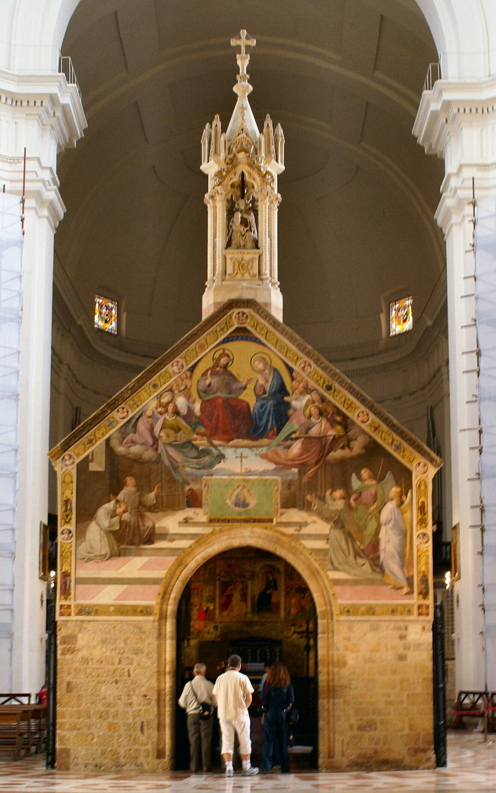
Церковка Порциункулы в Ассизи
Франциск и бедность
В церковке Порциункулы5 в 1209 году было прочитано Евангелие о том, как Господь посылал Своих учеников проповедовать в совершенной бедности (ср. Мф 10,5-16). Тогда св. Франциск тотчас возрадовался в Духе Божием и сказал: Вот чего я хочу, вот что ищу, вот что я из глубины сердца желаю исполнить. (1 C 22)
Поручение, которое в Сан-Дамиано было вложено в самую его жизненную основу, открывается ему здесь, в Порциункуле, в самом ярком свете: он должен не только строить дома из камня; живую Церковь Иисуса он должен вернуть к чистоте и силе, в которых её основали апостолы. Поэтому он сам должен жить так, как жили апостолы. То, что он всегда искал из глубины сердца, теперь обретает облик обещанной Невесты. Он нашёл её, благороднее, богаче и прекраснее, чем вы когда-либо её видели. (3 Gef 7) Иисус вверяет ему Своё величайшее и святейшее: Церковь, Свою Невесту. Дом, город, Иерусалим, Сион, Церковь – всё это имена Невесты. (ср. Откр 21,2) Франциск должен любить её так, как Христос её возлюбил: в её грехах и ранах. Смотри, она разрушается. Это слово трогает всю душу св. Франциска. Христос живёт в нём Своей жизнью Жениха и берёт его целиком к Себе на крест. Иисус ранит его раной Своей собственной любви; он должен «увидеть», какой проказой поражена Невеста, вся потерянная тварь, какие раны она раздирает в Теле Христа, и с какой любовью её Жених нисходит в её нищету, чтобы поцеловать её проказу и вернуть её к её достоинству.
Здесь он открывает бедность как тайну брачного союза. Он может вернуть Церковь в объятия Распятого только тогда, когда он так же беден, как сам Жених. И потому именно здесь, в церковке Порциункулы, – источник францисканской бедности. Франциск обручается с Невестой Бедностью.
5 Название «Порциункула» означает «маленькая частица», «малая доля». Легенда говорит, что паломник принёс землю из Святой Земли и рассыпал её по участку леса перед Ассизи, насколько хватило земли. Этот участок он посвятил Марии и построил на нём часовню. В народе разнеслась молва, что ангелы там поют хвалу Марии, и это часто слышали. Это место святой полюбил больше всех других и повелел братьям хранить его с особым благоговением. […] Блаженный отец рассказывал, что ему открыл Бог: блаженная Дева любит эту церковь с особой любовью среди всех других храмов, построенных в мире в её честь; поэтому и святой любил её больше всех других. (2 C 18-19)
И Господь дал мне в церквах такую веру, что я в простоте так молился и говорил: «Поклоняемся Тебе, пресвятой Господи Иисусе Христе, здесь и во всех церквах Твоих, какие есть во всём мире, и благословляем Тебя, ибо святым Своим крестом Ты искупил мир». (Св. Франциск)
О удивительное величие и изумительное снисхождение! О высшее смирение! О смиренное величие: Господь вселенной, Бог и Сын Божий так Себя уничижает, что ради нашего спасения заключает Себя под скромным видом хлеба! Поэтому прошу вас всех со всей любовью, на какую способен, чтобы вы всё благоговение и всю честь, какую только можете, воздавали Святейшему Телу и Крови нашего Господа Иисуса Христа. (Св. Франциск)
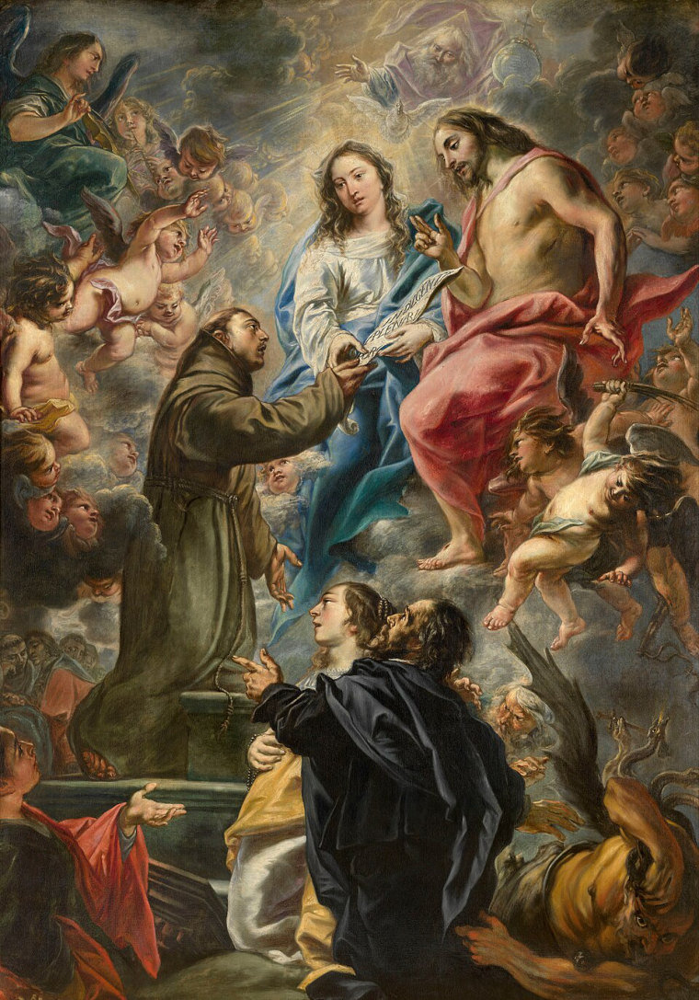
Франциск получает от Христа и Марии порциункульскую индульгенцию (Корнелис Схют)
Франциск и целомудрие
Тайна брачного союза Порциункулы раскрывается нам ещё глубже в порциункульской индульгенции.
Однажды зимней ночью Франциск был охвачен сильнейшими искушениями против целомудрия. Искушение было столь сильным, что Франциск вышел в холодную ночь, разделся донага и бросился в колючие заросли розового куста. Так он стал господином над искушением. За эту победу верности ему явились два ангела, которые пригласили его пойти с ними в часовню Порциункулы, сквозь окошко которой сиял яркий свет. Войдя, он увидел над алтарём Христа и Марию, окружённых хорами ангелов. Он упал на колени, и Иисус предложил ему: пусть он выскажет одно желание и передаст его Марии. Он умолял, чтобы каждый, кто верующим вступит в церковку Порциункулы, получил прощение всех грехов и всех наказаний за грехи. Мария приняла просьбу и принесла её Иисусу в Своём сердце Невесты. Иисус исполнил её с тем указанием Франциску, чтобы эту индульгенцию подтвердил Его наместник на земле – Папа Римский. Папа Гонорий, который в то время находился в Перудже, даровал индульгенцию.
Но какой духовный смысл имеет то жестокое искушение и победа в колючках розового куста, который после этой борьбы за чистоту утратил все шипы и посреди зимы был полон цветов?
Франциск должен вернуть Церковь от греха к брачному расцвету; славною, не имеющею пятна, или порока, или чего-либо подобного, но святою и непорочною она должна быть. (Еф 5,27) Как он может исполнить это поручение, если сам не сохранит себя чистым в самых сильных искушениях и хотя бы малейшей тенью желания ранит доверенную ему Невесту?
Бог открыл в раю первородную вражду между змеем и женщиной, которая рождает дитя. (ср. Быт 3,15) В этой вражде свирепствует дьявол, ненавистник и разрушитель брака Бога с творением, против Франциска, избранного из всех спутников Невесты. Это всемирно-исторические битвы, которые он в своей плоти ведёт с дьяволом и выигрывает. Он – Драконоборец, который знает, от какой опасности он должен спасти Деву. (ср. Откр 12,1 и далее) Снова и снова звучит в его писаниях, как крик из его сердца: И возненавидеть должны мы наше тело с грехами и пороками его; ибо плотской жизнью диавол хочет похитить у нас любовь Господа нашего Иисуса Христа и жизнь вечную, а самого себя вместе со всеми ввергнуть в ад. (Erm 22)
Это слёзы Иисуса над Иерусалимом, которые в глазах св. Франциска, израненных слезами, становятся кровавыми: Если бы и ты хотя в сей твой день узнал, что служит к миру твоему! (Лк 19,42) Здесь, в церковке Порциункулы, люди должны узнать и обратиться! Когда Франциск через все века ведёт к христианской жизни бесчисленных людей, это плод его покаяния и плача.6 Бог через Франциска в один из высших моментов истории открыл слово откровения о брачном пире. Он – глашатай, которого Первосвященник посылает с крестного брачного трона, чтобы пригласить на царскую свадьбу всё творение, чтобы оно было приведено домой и обвенчано в крови Христа. (ср. Еф 1,10; Кол 1,16-20) Это брачное торжество жертвенной смерти Христа Церковь совершает в каждой Святой Мессе. Приимите, ядите: сие есть Тело Моё. Сие есть Кровь Моя.
Умирая, Он склонил Свою голову к Марии и Иоанну, к брачной Церкви, и предал ей дух Свой. В то же время из Его сердца потекли кровь и вода. Так Он даровал Церкви, Своей возлюбленной Невесте, Свою жизнь и все Свои искупительные заслуги, чтобы через крещение и Евхаристию она стала Матерью всех живых.
6 Чем более в современном мире многие люди считают жизнь в совершенном воздержании невозможной, тем с большим смирением и настойчивостью священники, а с ними и вся Церковь, будут испрашивать дар постоянства и верности, в котором никогда не отказывают просящим о нём. Вместе с тем они будут применять все сверхъестественные и естественные средства, имеющиеся в распоряжении у каждого. (Декрет Второго Ватиканского собора Presbyterorum ordinis, 16)
Франциск узнал, как из сердечной раны Иисуса выходит небесный Иерусалим, Церковь с её таинствами и священническими порядками, подобно тому как Ева вышла из ребра Адама. Он видел, что каждый цветок, каждый камень, каждый червь, каждое облако на небе, каждая звезда – всё это брачное украшение, сотканное из крови Иисуса. Каждый цветочек соткан из любви Божественного Жениха к Его Невесте, которую Он хочет одарить.
В этом воплощённом даре Иисуса Своей Невесте основывается христианский брак. (ср. Еф 5,22-32) Поэтому он есть таинство. В обряде венчания брачующиеся в своём мужском и женском бытии священнически освящаются Святым Духом, так что их супружеская любовь получает освящающую силу любви Христа.
Папа Иоанн Павел II в своих публичных аудиенциях часто говорил о брачной тайне тела. Мы передаём через тело самих себя, либо в грехе, либо в святости. Поэтому всякое половое общение, которое происходит не в святости таинства, есть блуд: двое в своём мужском и женском бытии взаимно исполняют себя грехом и оскверняют храм Божий; они бесчестят небесный брак, который начался в крещении. (ср. 1 Кор 6,15-20)
Наше тело должно стать святым и Богу благоугодным жертвенным даром (ср. Рим 12,1), чтобы и мы могли любяще сказать Христу: «Это моё тело для Тебя!»
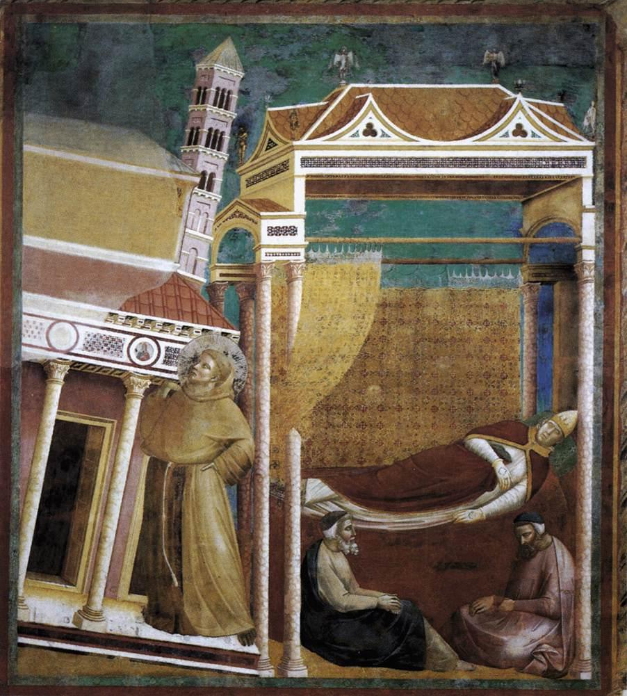
Папа Иннокентий III видит во сне монаха, который поддерживает Церковь.
Франциск и послушание
Откуда у Франциска глубокое почтение и полное послушание Церкви, и именно Римской Церкви? Зная о напряжении между священнической властью и личной святостью, он пишет в своём Завещании: Потом Господь дал мне такую веру в священников, живущих по обряду святой Римской Церкви, и такое почтение к их сану, что я, если бы они чинили мне гонения, хотел бы искать у них прибежища. […] И не хочу усматривать в них грехи, потому что различаю в них Сына Божия, и они господа мои. И потому так поступаю, что нигде не зрю телесно в этом мире Самого Всевышнего Сына Божия, кроме Святейшего Тела и Святейшей Крови Его, которые они воспринимают и лишь они одни передают другим. (Test. 6)
Поскольку обновление Церкви в большой степени исходит из освящения священников и посвящённых Богу,7 Иисус снова и снова призывает нас молиться и приносить жертвы за это намерение. Марии Зилер, мистику нашего времени, которая вела жизнь возмещения ради обновления священства, Иисус сказал: Я хочу сделать священников причастными Мне, хочу сделать из них второго Искупителя и Спасителя, чтобы снова привлечь к Себе страдающее и угнетённое человечество. Я хочу быть их жизнью, полностью соединиться с ними, сообщать Себя им. Моё Сердце должно стать их сердцем. (19.8.1937)8
7 Святость Пресвитеров немало содействует плодотворному исполнению их служения: ибо, хотя благодать Божия может осуществлять дело спасения даже через недостойных служителей, однако обычно Бог предпочитает являть Свои дивные дела через тех, кто выказал особое послушание побуждениям и водительству Святого Духа благодаря своему тесному единению со Христом и святости жизни и кто может сказать с Апостолом: «уже не я живу, но живёт во мне Христос» (Гал 2,20). (Декрет Второго Ватиканского собора Presbyterorum ordinis, 12)
8 Josef Fiedler S.J., Erneuerung der Kirche – Maria Sieler, Imprimatur: Vindobonae, die 18.04.1988, Praep. Prov. Austria P. Josef Czerwinski S.J.
Хороший пастырь, пастырь по сердцу Божию, – это величайший дар, который добрый Бог может дать приходу, и один из драгоценнейших даров божественного милосердия. св. кюре из Арса
Во всех священниках и епископах и обобщённо в Папе Франциск видит священническое присутствие и власть Жениха. В этом заключается тайна иерархической Церкви в её учительском, пастырском и священническом служении.
Иисус доверил Церкви всю Свою сокровищницу благодати. Это произошло знаменательно, когда тело Иисуса было снято с креста и положено на колени Марии; тогда она в своём лоне приняла все благодати, которые Христос стяжал на кресте.
На Пятидесятницу эта сокровищница благодати была вложена в лоно Церкви, и так Церковь соединилась с Марией. Ключ к этой сокровищнице Христос дал Петру. Он может также действительно отверзать и затворять для неба, вязать и разрешать; это совершается особенно через совершение святых таинств. Через индульгенцию Мать-Церковь также в избытке одаряет своих детей благодатью и прощает им то, что они ещё должны были бы искупить, властью Иисуса. Ибо как Иисус в Своём воплощении хотел быть полностью зависимым от Марии, так и теперь в Своём действии благодати Он хочет быть полностью зависимым от Церкви.
Отче Святой! соблюди их во имя Твоё, которое Ты Мне дал, чтобы они были едино, как и Мы. Ин 17,11
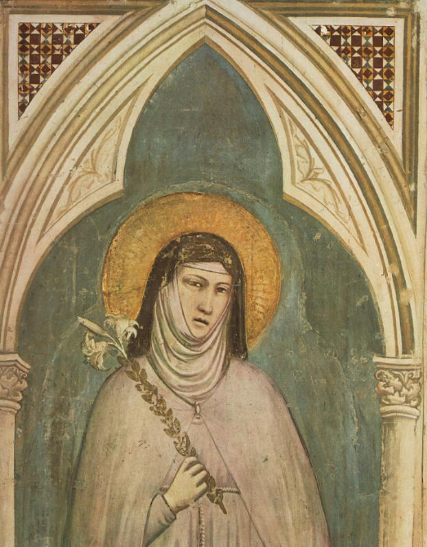
Святая Клара Ассизская с лилией (фреска, Джотто)
Невеста Клара (1193 – 1253)
Св. Клара Ассизская, рождённая в знатной семье, основала вместе со св. Франциском, который лично облёк её в одеяние в Сан-Дамиано, орден кларисс. Клара сорок лет будет женщиной под тем крестом, который говорил с Франциском в Сан-Дамиано.
… в этой строгой клаузуре она сорок два года бичами дисциплины разбивала алебастровый сосуд своего тела, так что дом Церкви наполнился благоуханием мазей. (LebKl 10)
Так Клара становится живым истолкованием поручения, которое Франциск в Сан-Дамиано получил от Христа: восстановить Его дом. В Кларе становится видимой Церковь, которую Франциск должен привести ко Христу как святую, чистую Невесту для брака. Поэтому любовь св. Франциска к Кларе есть любовь Христа к Своей Церкви.9
9 Ср. Eugen Mederlet OFM, Die Hochzeit des Lammes, 1983, S. 96-133, Imprimatur: P. Karl Feusi OFM, Provinzial. Францисканские тексты-источники взяты из изданий «Franziskus-Quellen», 2009, и «Klara-Quellen», 2013.
Молитва за святую Церковь
Святой Франциск, могущественный ходатай рядом с Иисусом Распятым в Его величайшем милосердии. Мы просим твоей помощи в нашей великой нужде. Чудесное творение Божие, мир, да и всё человечество и святая Церковь находятся в тягчайшей беде.
Святой Франциск, твёрдая опора католической Церкви, однажды ты уже поддержал шатающиеся стены Церкви, снова ей угрожают со всех сторон. Вымоли нам единство в вере, чтобы все, кто стоит вне Церкви Иисуса Христа, нашли своё прибежище в объятиях Иисуса. Чтобы они узнали обратный путь, который ведёт их к верности Учительству, укоренённому в скале папства, и к участию в заслугах Иисуса Распятого со всем богатством Его благодатных сокровищ.
Святой Франциск, подобие страстей Иисуса, отмеченный Его ранами, предстой нашим епископам и священникам, чтобы они как защитники и хранители нашей веры боролись, противостояли заблуждению и достигали сходства с тобой. Аминь.
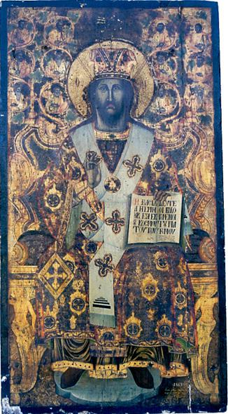
Иисус Христос, Вечный Первосвященник
Святая Бригитта Шведская (1302/03 – 1373)
Св. Бригитте, покровительнице Европы, которая вела героическую жизнь жертвы ради обновления духовенства и всей Церкви, Иисус снова и снова открывал Свою великую скорбь из-за безнравственной жизни некоторых Своих служителей.
Однажды Иисус сказал Бригитте: Смотри, дочь Моя: когда Я отошёл от мира, Я вверил Моим священникам самое дорогое Мне и оставил им пять даров. Во-первых, Мою веру; во-вторых, два ключа от ада и неба; в-третьих, силу сделать из врага Бога ангела; в-четвёртых, власть освящать Моё Святейшее Тело, чего не может сделать ни один ангел; в-пятых, привилегию касаться Моего Пресвятейшего Тела своими руками. Теперь же они обращаются со Мной так, как те, которые отрицали, что Я воскресил Лазаря из мёртвых. […] Так поступают ныне священники, когда не говорят Моих слов и не возвещают Моего учения, а учат любви к миру и проповедуют сладострастие, и ни во что не ставят ту вину грехов, которую на себя навлекли.
Эта жалоба Вечного Первосвященника, переданная священникам через святую, не осталась без действия среди духовенства и народа.
Как сильно Он любит Своих священников и как Он их избрал, показывают нам эти слова Бригитте: Я избрал священников выше всех ангелов и святых и им одним дал власть делать Моё Тело присутствующим и касаться его. […] Я так любил священников, что хотел оказывать им такую честь одним и позволил им подниматься ко Мне по семи ступеням. Они должны были быть терпеливыми, как овцы, стойкими, как стена на прочном основании, отважными, как воины, мудрыми, как змеи; стыдливыми, как девы, чистыми, как ангелы, пылающими любовью, как невеста, стремящаяся в покои своего жениха.
В откровении, которое Бригитта получает от Богородицы, Папа получает указание следить за чистотой духовенства: Папа должен повелеть каждому епископу следить за жизнью своих клириков, чтобы каждого, кто не захочет исправить свою жизнь и пребывать в воздержании, полностью лишали бенефиция, ибо Богу угоднее, чтобы в таком месте вовсе не совершалась месса, чем чтобы Тела Сына Божия касались руки блудниц.10
10 Gottes Nordlicht von Ferdinand Holböck, 1983, S. 293-295, 298, Imprimatur: Erzbischöfliches Ordinariat Salzburg, + Jakob Mayr, Weihbischof und Generalvikar.
Святая Екатерина Сиенская (1347 – 1380)
Св. Екатерина Сиенская, доктор Церкви и покровительница Европы, была одушевлена совершенно исключительной любовью к Церкви. Как её современница, св. Бригитта Шведская, она неутомимо боролась оружием духа за реформу и единство Церкви. Когда однажды в видении на её плечи возлагается «мистический корабль Церкви», она под его тяжестью падает. Незадолго до своей смерти она молилась:
Боже вечный, прими в жертву мою жизнь за мистическое Тело святой Церкви. Мне нечего принести, кроме того, что Ты дал мне. Возьми же моё сердце и выжми его над лицом этой Невесты.11
11 Св. Екатерина в 1377 и 1378 годах с перерывами диктовала книгу, которую обычно называют «Диалог о Божественном Провидении» или «Диалог о Божественном учении». В ней её душа в восхищённом разговоре с Господом излагает то, что ей возвещает вечная Истина в ответ на её вопросы о благе Церкви, её детей и всего мира. Книга отмечена пророческим духом, ясностью мысли и выражения. Она рассматривает возвышеннейшие тайны нашей религии и труднейшие проблемы аскетики и мистики. Бдительно и умоляюще она обращается к братьям в мире, которых видит гибнущими на путях греха, и пытается пробудить их от смертельного оцепенения. С тонкой психологической интуицией она бросает пучки света на путь совершенства, восхваляя возвышение человека, который в подражании послушному Христу находит верный путь к Пресвятой Троице … (св. Папа Иоанн Павел II, из апостольского письма «Amantissima Providentia», 29.4.1980)
Святая Тереза Младенца Иисуса (1873 – 1897)
Святая кармелитка Тереза Младенца Иисуса, покровительница миссий и доктор Церкви, которая сгорала в пламенной любви ко Христу и Его Церкви, пишет в своей автобиографии:
Я поняла, что у Церкви есть сердце, и это сердце пылает любовью. […] Тогда, исполненная безумной радости, я воскликнула: О Иисусе, Любовь моя, … наконец-то я нашла своё призвание: моё призвание – Любовь! … Да, я нашла своё место в Церкви. Это место, Боже мой, Ты дал мне его … в сердце моей Матери-Церкви я буду любовью … тогда я буду всем … и мечта моя осуществится! … Я всего лишь дитя, немощное и слабое, однако именно слабость наделяет меня отвагой, чтобы принести себя в жертву Твоей любви, Иисусе! […] Я не хочу упустить ни одной малой жертвы, ни одного взгляда, ни единого слова, хочу использовать самые незначительные поступки и совершать их из любви … О мой Иисусе! Я люблю Тебя, люблю Церковь, мою Мать, и помню, что малейшее выражение чистой любви полезнее для неё, чем все другие дела, вместе взятые.
Молитва за священников
О Иисус, Вечный Первосвященник, сохрани Своих священников под покровом Твоего Святейшего Сердца, где никто не может им навредить.
Сохрани незапятнанными их помазанные руки, которые ежедневно касаются Твоего Святейшего Тела.
Сохрани чистыми уста, которые окрашены Твоей драгоценной Кровью.
Сохрани чистым и неземным их сердце, запечатлённое возвышенным знаком Твоего славного священства.
Дай им расти в любви и верности Тебе и защищай их от заражения миром.
Дай им вместе с силой пресуществления хлеба и вина также силу пресуществления сердец.
Благослови их труды обильным плодом и даруй им в своё время венец вечной жизни. Аминь.12 св. Тереза Младенца Иисуса
12 Основой её молитвы и жертв у Терезы было большое уважение к священству. Хотя она замечает слабости священников, она не переходит просто к критике. Скорее это для неё повод молиться и приносить жертвы. И при испытании, которое предшествовало её профессии, она сказала: «Я пришла, чтобы спасать души и особенно чтобы молиться за священников». (Из: Тереза из Лизьё, Selbstbiographie, 1988)
Блаженная Дина Беланже (1897 – 1929)
Миссия блаженной Дины из ордена Сестёр Иисуса и Марии в Силлери (Канада) состояла прежде всего в жизни возмещения ради освящения священников и посвящённых Богу. Ей также Господь открыл Свою большую любовь к посвящённым душам, а также Свою глубокую скорбь о их неверности.
Мои священники, Мои священники, увы! Как Я их люблю! А между тем среди них так много таких, которые так мало Меня любят! … Если Моё Сердце во время агонии пролило над ними кровавые слёзы, то случилось это не только потому, что они отделились от Меня утратой освящающей благодати, но и потому, что они недостаточно ведут жизнь глубокого соединения со Мной. Я призываю их стать вторым Христом. Быть другим Моим «Я» – вот их призвание. Многие из них – Моё утешение, Моя слава и Моя честь. Но некоторые, увы! огорчают Меня … Хочешь ли ты, Моя маленькая Невеста, подарить Мне через Мою пресвятую Матерь свой сегодняшний день для Моих священников? Хочешь ли дарить Мне так каждую субботу? То есть любить Меня через Мою возвышенную Мать, молиться, отрекаться от себя, приносить себя в жертву за Моих священников? […]
В руках Моих священников лежит вся религиозная жизнь общества. Если бы они все были поистине святы, один только их вид, будь то в церкви, на улице или в другом месте, направляло бы мысли людей на Меня; они притягивали бы души ко Мне; при встрече с ними люди подумали бы: это второй Христос, который идёт! […]
Если бы ты знала, сколько утешения получает Моё Сердце, когда Я нахожу душу, которая полностью отдаёт себя Мне! Но Я нахожу их так мало! Даже среди посвящённых душ редки те, которые полностью отдают себя Мне! – Мои апостолы Пётр, Иаков и Иоанн, которым Я отдал Себя именно в Святом Причастии и которых Я сделал священниками, были посвящёнными душами, и они спали во время Моей агонии! Сколько посвящённых душ спят и поныне, в то время как Моя Церковь преследуется и страдает.
Дина получает большие прозрения в тайну Пресвятого алтарного Таинства. Если бы мы понимали, какое сокровище мы имеем в Божественной Евхаристии, тогда церкви днём и ночью были бы переполнены поклоняющимися, которые сгорают от любви к Божественному узнику дарохранительницы.
Моё Сердце преисполнено благодатей для душ. Приведи их к Моему Евхаристическому Сердцу! Иисус блаженной Дине
Дине Господь открывает также глубокие тайны о блаженствах неба и о несказанной ценности Креста.
Дина видит, что наименьшая степень блаженства на небе бесконечно больше весит, чем все мыслимые радости на земле. И каждый малейший акт любви, согласия с Божией волей, послушания или отречения даст нам такое блаженство. Пресвятая Троица предлагает нам бездны Своих богатств, но как мало тех, кто их принимает, полностью отдавая себя святому действию Божию.
Никогда мы не сможем постичь безмерность бесконечной благости по отношению к каждой человеческой душе. Самая долгая жизнь здесь, на земле, в действительности длится лишь краткий миг. Как безумны мы, если не употребляем этот миг, который составляет нашу земную жизнь, на большую славу Высочайшего Господа. Какие неожиданности будут в последний час, когда завеса истины разорвётся! […]
Я хотела бы всем душам, особенно избранным, сделать понятной ценность Креста. Страдание – безмерная золотая жила; оно – горящая стрела, которую любовь выпускает из сердца Бесконечного, чтобы испепелить человеческое сердце и погрузить его в Божество. […]
Нет, сердце этого достойного поклонения Жениха, такое нежное и доброе, не познано! Иисус избрал Крест как святое благо. Он обнял его со страстью, Он любил его до безумия: и это ради нас! […] Как же радуется Его Сердце, когда раненая и распятая душа с любовью целует бич, копьё и драгоценные гвозди! […] О Дух истины, ради заслуг Иисуса прошу Тебя, даруй душам свет, научи их ценить истинные блага и признавать бесконечную благость в часы испытаний и унижения.13
О Иисус, Вечный Первосвященник, Ты, Кто из любви к нам искупил человечество Своими страданиями и крестной смертью, благосклонно прими через благословенные руки Твоей Матери моё страдание. Вместе с Твоим крестом приношу Тебе в любви моё. Дай плодов апостолату Твоих священников, чтобы Твоё Царство света, любви и мира пришло к нам. Аминь.14
13 Die Selige aus Kanada, автор Engelbert Recktenwald, 1996.
14 Imprimatur: Frib. Helv., 15 сентября 1960.
Сестра Консолата Бетроне (1903 – 1946)
Миссия, которую Иисус доверил Божией служанке сестре Консолате из ордена клариссинок-капуцинок, состоит в том, чтобы через «Самый малый путь любви», к которому она призывает души, участвовать в религиозном обновлении мира и спасении душ. Этот духовный путь, как видно из наставлений Иисуса, можно свести к трём пунктам:
- Непрестанный акт любви – молитва сердца, то есть внутренний акт.
- Улыбчивое «да» всем: видеть в каждом Иисуса и обращаться со всеми, как с Иисусом.
- Благодарное «да» всему: ко всему, чего Бог хочет от нас.
Земная жизнь Иисуса была непрестанной борьбой за спасение душ. Об этом томительном стремлении Господь говорит сестре Консолате:
Любовь и души! Что может быть прекраснее? […] Иисус, Мария, я люблю Вас, спасайте души! Включите всех: души в чистилище, как и души воинствующей Церкви, невинных и виновных, умирающих, безбожников, все души!
Иисус особенно поручил сестре Консолате тех посвящённых Богу, которые стали неверны своему призванию. Так Он объяснил ей:
Консолата, и у тебя в Церкви есть стадо, которое ты должна вести к вечной жизни: твои братья и сёстры. Итак, и ты станешь добрым пастырем, который, как Иисус, отдаёт свою жизнь за овец своих.15
Мария, Ты, добрая Матерь священников, возьми всех священников под Твою особую защиту и покров и благой материнской рукой возврати к Доброму Пастырю также бедных заблудших священников, изменивших своему высокому призванию. Аминь.16
Для этих своих братьев и сестёр Консолата делала всё. Непрестанно при всех своих делах она молилась свою молитву сердца: Иисус, Мария, я люблю Вас, спасайте души! – и делала из всего жертву Богу. За это Иисус даровал ей обещание:
Смотри, это всё безделицы, но Я радуюсь им очень и придаю им неизмеримую ценность, потому что ты приносишь их Мне с великой любовью. Все эти пустяки Я изливаю как благодати обращения на наших несчастных братьев.
Монастырю часто поручались очень конкретные тяжёлые случаи, за которые Консолата заменяла собой и принимала на себя соответствующие страдания. Так она порой долго переживала сухость, покинутость, бессмыслие, одиночество, сомнения и греховные состояния священников. Однажды в этой борьбе она написала своему духовному руководителю: Сколько же стоят братья! Но Иисус дал ей великолепное обещание:
Консолата, ты пойдёшь на поиски каждого брата и каждой сестры и приведёшь их ко Мне, и Я прощу им ради крови, которую Я пролил за всех.17
Не должно быть на свете ни одного брата, каким бы он ни был грешником, сколько бы он ни грешил, который увидел твои глаза, а потом должен был бы уйти от тебя без твоего милосердия, если он ищет милосердия; а если он не ищет милосердия, спроси его, хочет ли он милосердия. И даже если он после этого тысячу раз будет грешить перед твоими глазами, люби его больше, чем меня, чтобы привлечь его к Господу. св. Франциск
15 Иуда, к сожалению, не остался один: он был лишь первым в длинной цепи, которая тянется до сегодняшнего дня. Все эти несчастные – причина терний вокруг Божественного Сердца Иисуса и горчайших слёз Церкви, которая так желает, чтобы все верующие через молитву и жертвы участвовали в освящении священников и посвящённых Богу. Многие, правда, сетуют на эти соблазны и бросают камни в заблудших овец, но лишь немногие помогают возвратить этих несчастных ко Доброму Пастырю. Не забудем, что каждая краткая молитва и каждая малая жертва в этом намерении – жемчужина и знак нашей взаимной любви и ответственности.
16 Imprimatur: Регенсбург, 1.2.1973.
17 Ср. Schwester Consolata Betrone, автор P. Lorenzo Sales, 1961, Imprimatur: Friburgi Helv., 15 сентября 1961.
Святая Месса – солнце нашей жизни
Из всех сокровищ мира нет ничего драгоценнее Святой Жертвы Мессы; и из всех несчастий мира нет ничего большего, чем незнание этой Пресвятой Жертвы. Ибо в совершении Святой Мессы мы как члены мистического Тела стоим словно у подножия Креста и вместе с Христом, нашим Вечным Первосвященником, можем приносить Небесному Отцу совершенную жертву хвалы, благодарения, умилостивления и прошения. Святая Месса есть поэтому источник и высшая точка всей христианской жизни, высочайшее богослужение, таинственное бескровное присутствие крестной жертвы Иисуса Христа, вновь делаемой действительной.
Прошу также в Господе всех моих братьев-священников, которые являются священниками Всевышнего […]: чтобы, когда бы они ни хотели служить мессу, сами чистые и с чистым помыслом, с благоговением и со святым и чистым намерением совершали истинную жертву святейшего Тела и Крови нашего Господа Иисуса Христа. св. Франциск
В послушном предании Иисуса Отцу воздаётся вся слава и честь. В то же время любовь Христа открывает каждому человеку путь, который ведёт к сердцу Отца. Так в этой тайне сияет глубочайшее свойство Бога, Его непостижимое милосердие. Всё наше бытие, нашу человеческую слабость, наши заботы и нужды, а также вину всех людей мы возлагаем в действо пресуществления Святой Мессы. Ибо в принесённом Теле и пролитой Крови Христа мы находим исцеление и искупление для наших грехов и грехов всего мира.
О Святой Мессе можно сказать то, что Священное Писание говорит о Премудрости: Она есть неистощимое сокровище для людей; пользуясь ею, они входят в содружество с Богом (Прем 7,14).
Ни один час дня не драгоценнее того часа, в который мы участвуем в Святой Мессе. Это время – поистине золотой час. Жертвы, которые мы несём при участии в Святой Мессе, превращаются в золото. Ибо как солнце превосходит все планеты, так благоговейное участие в Святой Мессе превосходит все другие дела благочестия.
Нет ничего, что могло бы сравниться с величием Евхаристии! Сравните все добрые дела мира с одним добрым причастием – это как пылинка рядом с горой. св. кюре из Арса
В тот миг, когда совершается Святая Месса, ангелы небес устремляются к темнице чистилища и открывают её. св. Иоанн Златоуст
Когда святой падре Пио однажды спросили, что нам делать на Святой Мессе, святой ответил: сострадать и любить. Он также имел обыкновение говорить: скорее мир мог бы существовать без солнца, чем без Святой Мессы.
О Иисус, Твоей смертью и Твоей святой Кровью обрати грешников, спаси умирающих, избавь бедные души из чистилища, освяти священников, монашествующих и семьи.
При каждом совершении Святой Мессы звучит призыв Небесного Отца: Всё готово, приходите на брачный пир! Мой возлюбленный Сын через руки священника возобновляет жертву Голгофы и питает вас в Пресвятой Евхаристии Своей собственной Плотью и Кровью! И всё же как немногие следуют Его приглашению – Но они, пренебрегши то … Так говорится в притче о царском пиршестве, которую мы в следующей главе наглядно и близко к жизни рассмотрим.
Приходите на брачный пир!
Христос – единородный Сын Божий. В Своём воплощении Он приходит, чтобы призвать на брачный пир Свою Невесту, святую Церковь, и пригласить людей на торжество. Притча называет четыре группы званых:
Первая группа – равнодушные. Такие есть и среди званых Богом. Приглашение обращено к ним несколько раз с подчёркнутой настойчивостью. Но религия им ничего не говорит. Они – реалисты, для которых действительностью является только земное и материальное. Христианство их не интересует. […] Оно не имеет ничего общего ни с биржевыми спекуляциями, ни с карьерой, ни с общественным положением. Приглашение так и лежит неразобранным на письменном столе или отправляется в корзину для бумаг. В действительности же перед Богом не существует равнодушия, ибо Бог этого не признаёт. Кто не заботится о Христе, не войдёт в Царство Божие; он – тот, кто стоит снаружи и потому остаётся снаружи. Окончательный приговор Господа будет таков: «Не знаю вас!»
Вторая группа – противники. В притче они попросту убивают посланников с приглашением. Они не держатся ни стороны правящего владыки, ни наследника престола. […] Они явно находятся в другом лагере. Что касается Царства Божия, это – воинствующие атеисты, ненавистники христианства. Религия для них не безразличное дело, а опиум для народа, препятствие для восхождения человечества, враг подлинной человечности, оставшийся от суеверного Средневековья пережиток, который теперь должен быть окончательно устранён. Поэтому они ведут борьбу словом и пером, объединяются для совместных действий и организуют сопротивление. В притче ответ царя не заставляет себя ждать. Его войска окружают оплот вражеского сопротивления, сравнивают его с землёй и убивают врага. Это образ великого суда Христа в конце времён.
Третья группа – лишённые благоговения. Притча изображает одну фигуру как их представителя. Человек, которого пригласили на брачный пир с улицы и которому в передней предложили праздничную одежду, убеждён, что его лохмотья достаточно хороши. Пусть его возьмут таким, каков он есть. Приглашение ничего для него не значит. Говоря о духовном, это люди, которые не хотят знать, о чём речь у Бога. У них нет страха Божия. […] Религиозная жизнь – это то, что время от времени выражают, скорее по принуждению, чем добровольно. Утром ходят на воскресную мессу, как днём обедают в ресторане, или вечером идут на концерт, а в будни – в контору. Богу следовало бы радоваться, если они исполнят приглашение на богослужение. Это люди, которые никогда по-настоящему внутренне не постигли, что значит призыв Божий. Различие между Творцом и тварью, вечностью и временем, бесконечностью и конечностью, Господом и слугой никогда не стало для них по-настоящему живым. […] Поэтому они никак не стараются о соответствующем внутреннем настрое. Они не понимают, что христианин живёт иначе, чем нехристианин. Поскольку Бог для них – нечто второстепенное, они не заботятся и о том, живут ли они в благодати Господа или во грехе. […] Последствие в притче показано наглядно. Это изгнание из освещённого праздничного зала во тьму, из избранности – в отвержение. Внешней принадлежности к Церкви Христа недостаточно. Если внутреннее преображение не происходит, всё завершается изгнанием.
Ценность одной-единственной благодати больше ценности всей вселенной. св. Фома Аквинский
Четвёртая группа – подлинные гости на брачном пиру. Происхождение их, правда, странное: бродяги, бездомные, простой народ и нищие из-под живых изгородей и заборов. Приглашение стало для них величайшей неожиданностью в жизни. С радостью исполнили они приглашение. С трепетом благоговения вошли они во дворец, с детской радостью надели подаренную праздничную одежду. И вот они на свадебном торжестве, словно в небе. Лишь одного они боятся: когда-нибудь снова выйти туда, в грязь и нищету, в холод и тьму снаружи. Это люди сияющих глаз и благодарных сердец, люди, которые знают, что такое благодать и призвание. Это грешный человек, призванный в мир благодати. Это религиозный человек, который знает, что без Бога всё ничего не стоит, который умеет оценить призвание как свободно дарованную благодать и глубоко носит в себе болезненный опыт собственной слабости и греховности. Но всё исчезает в блеске праздничной радости, ибо он знает, что католическое христианство есть свадебное торжество, которое началось с воплощения Бога и при Втором пришествии Господа достигнет полной праздничной высоты, со светом, который больше не погаснет, и с радостью, которая больше не умолкнет.
Так христианство требует решения «за» или «против», «да» или «нет». […] Речь идёт о последнем и глубочайшем: о вечном бытии или небытии.18
Небесный Отче, я приношу Тебе через Марию бесконечные заслуги Иисуса в возмещение за все растраченные мною благодати. Аминь.
18 Richard Gutzwiller, Die Gleichnisse des Herrn, 2017, Imprimatur des Bischöflichen Ordinariates Chur, 2. März 1960.
Слёзы Матери
Плача, закрывая лицо руками, Богородица явилась 19 сентября 1846 года двум пастушкам в Ла-Салет.
Я здесь, чтобы сообщить вам важное послание … Если Мой народ не захочет подчиниться, Я вынуждена отпустить руку Моего Сына. Она так тяжела и так гнетёт, что Я больше не могу её удерживать. Так давно Я страдаю за вас, а вам до этого нет дела! … Шесть дней Я дала вам для работы. Седьмой день Я оставила Себе, но Мне его не хотят уступить.19 Вот что делает руку Моего Сына такой тяжёлой … Если урожай портится, то только из-за вас … Если они обратятся, камни и скалы превратятся в груды зерна, а поля будут усыпаны картофелем …
Ах, дети, вы должны правильно молиться, пусть даже это будет только «Отче наш» и «Радуйся, Мария» утром и вечером, если у вас нет больше времени. А если у вас есть время, то молитесь больше! Летом на Святую Мессу ходят лишь несколько старых женщин. Остальные работают по воскресеньям всё лето. А зимой, когда им нечего делать, они ходят на Святую Мессу только затем, чтобы насмехаться над религией …
Во время всего явления слёзы текут из глаз Богородицы.20
Наша Любимая Госпожа из Ла-Салет, Примирительница грешников, без устали моли за нас, которые прибегаем к Тебе!
19 По воле Божией все благодати, заслуженные Христом, даруются нам через Марию. Так и дни, которые Бог нам дарит, проходят через руки Марии. (ср. Лев XIII, энциклика Octobri Mensae) Поэтому Мария в Ла-Салет могла сказать: «Шесть дней Я дала вам для работы».
20 19 сентября 1851 года послание из Ла-Салет было церковно признано Филибером де Бруйаром, епископом Гренобля. Как же божественная стратегия спасения отличается от нынешних программ обновления! Через Богородицу Господь требует не ослабления церковного учения о нравственности, а покаяния и обращения, не сокращения почитания Марии ради экуменизма, а почитания Её Непорочного Сердца. По отношению к падре Пио Господь требует не отмены целибата и не литургических экспериментов для оживления богослужения, а Он сетует на равнодушие и отсутствие благоговения, которые проявляют к Нему в Пресвятом Таинстве Алтаря. По отношению к блаженной Дине Беланже Господь требует от Своих священников не большей открытости миру, а жизни в более тесном соединении с Ним, а от орденов и общин – не послабления дисциплины, а большей верности Святому Уставу. В посланиях к святой сестре М. Фаустине Господь не предлагает ослабления сознания греха, а призывает часто принимать Его милосердие в святом Таинстве покаяния. То, что сегодня восхваляется как прогресс, на деле есть подрыв вероучения и нравственного учения. И этот подрыв пронзает Сердце Иисуса и Марии. (ср. Engelbert Recktenwald, Harter Geist und weiches Herz, Imprimatur: P. Josef Bisig, Suprio generalis, FFSP, Опфенбах, 21 октября 1996)
Тихий путеводитель к католической вере
Миссионеры из Стейла (Общество Божественного Слова) отец Гётш и брат Гервасий пережили в Китае событие, которое не поддаётся никакому рассудочному постижению.
Брат Гервасий сопровождает отца из Каотая к тяжелобольной. После трёхдневной поездки верхом более чем на двести километров они у цели, но больная уже умерла. Удручённые, миссионеры отправляются в обратный путь. Примерно на половине горного пути они встречают мальчика, который просит их пойти с ним к его матери. Мальчик ведёт их примерно на 15 км в сторону, в небольшое селение. В глинобитной хижине их ждёт умирающая. Она неожиданно задаёт обоим миссионерам странные вопросы:
«Чужеземец, ты хочешь ответить мне по правде?»
«Конечно.»
«Есть ли Бог, в котором три облика? Есть ли в загробной жизни место радости для добрых и место ужаса для злых? Правда ли, что Бог сошёл на эту землю, чтобы умереть за людей и открыть им место радости? Иностранец, всё это правда?»
Священник изумлённо подтверждает все эти вопросы. Откуда больная знает эти истины веры?
«У тебя есть вода», – продолжает больная, – «омой меня, чтобы я попала в место радости!»
Откуда она знает, что у отца Гётша есть крещальная вода? После короткого разговора миссионер совершает над больной крещение. С радостью мать высказывает новое желание: «У тебя есть хлеб. Не обычный хлеб, а Сам Бог. Дай и мне от него.»
Умирающая знает и о том, что священник имеет при себе Пресвятое. Отец Гётш подаёт ей Святое Причастие и совершает таинство елеосвящения.
Затем он говорит: «До сих пор ты задавала вопросы, теперь я задам несколько вопросов: откуда ты знаешь истины веры? Рассказывали ли тебе католики или евангелические христиане?»
«Я не знаю христиан, чужеземец!»
«Ты всё это прочла в книгах?»
«Я не умею читать. И я не знаю, что на моём языке есть христианская литература.»
«Так откуда же у тебя знание веры?»
«Я просто думала, что так и должно быть. Уже десять лет я живу по этой вере. Я также учила моих детей. Ты можешь всех их „омыть“ (она имеет в виду крестить).»
«Ты знала, что мы сегодня придём?»
«Да, мне снился сон, и я видела одного пожилого мужчину, который сказал мне, чтобы я послала моего мальчика на дорогу и позвала двух чужеземцев: они „омоют“ меня для доброго места после смерти.»
Миссионеры глубоко потрясены. Умирающая держится перед лицом смерти так просто, что не остаётся места для сомнений. На прощание они дарят ей маленькую картинку со святым Иосифом, покровителем умирающих. Больная вне себя от радости. «Его я знаю, он ведь меня навещал. Он уже не раз бывал у меня и велел мне послать моего сына на дорогу, чтобы позвать вас.»
Был ли он во сне или наяву у неё? Она не знает, и ей это и не важно. Важно то, что она через него узнала.
Женщина умерла ещё в ту же ночь.21
Любящий святой Иосиф, могущественный покровитель Святой Церкви, воззри на великую скорбь Невесты Иисуса Христа и на ужасную нужду стольких душ. О, приди им на помощь вместе с Иисусом и Марией, ангелами и святыми. Смути замыслы безбожников и воспламени сердца верных огнём Святого Духа, чтобы они свободно и открыто исповедовали Иисуса, боролись за дела Царства Божия и побеждали. Аминь.22
21 По сообщению Ludwig Lenzen в «Weite Welt», № 1, январь 1976.
22 Imprimatur: Регенсбург, 13.3.1977.
Рыбы в сети Церкви
Многие люди сильно подвержены влиянию нашего совершенно посюстороннего и безверного общества и, большей частью принуждённые законом греха (ср. Рим 7,23), отрываются от жизненного потока таинств Церкви. Однако, несмотря на всю кажущуюся с этим связанную «свободу»23, во имя которой особенно нравственные и религиозные ценности выбрасываются за борт, во многих сердцах царит глубокая печаль и одиночество. Ибо когда мы, как упрямые дети, прощаемся с заповедями Бога и Его Церкви, мы в конце концов оказываемся перед хаосом неудавшейся жизни.
О несправедливый мир! Ты делаешь всё, чтобы изгнать Меня с лица земли, вытеснить из общества. […] Ты строишь козни, как бы разрушить Мою Церковь и умертвить её служителей. […] И Я посрамлю тебя Моей любовью. […] Одно лишь слово «Воля Божия» заключает в себе вечное чудо, с которым ничто не может сравниться. […] Моя воля заключает в себе сущность всех радостей, источник всех блаженств. Иисус Божией служанке Луизе Пиккарета
23 Что эта «свобода» в конце концов делает нас рабами, показывают слова Иисуса в Евангелии от Иоанна: «Если вы пребудете в слове Моём, то вы истинно Мои ученики, и познаете истину, и истина сделает вас свободными. […] Истинно, истинно говорю вам: всякий, делающий грех, есть раб греха. Но раб не пребывает в доме вечно; сын пребывает вечно. Итак, если Сын освободит вас, то истинно свободны будете». (Ин 8,31-36)
Когда мы всё больше «забываем» Бога, единственный источник всякой радости, и удаляемся от Его святейшей воли, то наша совесть постепенно затемняется и вера угасает. Ибо вера и грех на долгое время не могут быть добрыми соседями, и поскольку человек любит грех и не хочет от него отказаться, вера должна уступить.
С учётом этой истины св. Павел проповедует: Сохраняй веру и добрую совесть. Некоторые, отвергнув их, потерпели кораблекрушение в вере (1 Тим 1,19).
Человек перестаёт практиковать как католик, громко ругает религию и Церковь, сомневается в основных истинах христианства и в конце концов за одну ночь становится протестантом или окончательно выходит из Церкви. По этому поводу св. Киприан заметил: Пусть никто не думает, что добрые могут покинуть Церковь. Бури уносят мякину и солому, а не пшеницу.
Однажды юноша похвалялся перед философом Паскалем, что теперь он уже не верит. Тот ответил ему: «Отбрось грех, и завтра ты снова будешь верующим».
Даже если «дети этого мира» уже не хотят слушать учение Церкви и её нравственные требования, все пастыри и верующие призваны твёрдо и верно стоять за истинную католическую веру. Особенно священники, которые держатся любви к Господу и Его истине, хотя и идут путём мученичества, сохраняют, несмотря на многие испытания, своё достоинство и одновременно становятся благословением для множества душ, которые Бог им доверил. Они борются, как Иоанн Креститель, за нерасторжимость брака и тем самым навлекают на себя ненависть «Иродиады» – «мира». Подобно Стефану, они свидетельствуют об истине Христа и попадают тем самым в жесточайшие бои: Слушая сие, они рвались сердцами своими и скрежетали на него зубами. (Деян 7,54) И как блаженный священник-мученик Отто Нойрурер, которого нацисты убили за то, что он ясно выступал против брака молодой женщины с разведённым и вышедшим из Церкви нацистским офицером, так и верные священники, хотя и не телесно, то духовно и душевно преследуются ради святого Евангелия. Можно привести ещё бесчисленные примеры, которые ясно показывают нам: Иисус не оставляет Свою Церковь, потому что она – Его возлюбленная Невеста, и потому что Он пролил за неё последнюю каплю Своей крови. Из Его пронзённого сердца течёт брачное вино святых таинств, плодов которых мы лишаем себя на время и в вечности, когда отрекаемся от нашей католической веры.
Именно эта тяжкая утрата веры и нравственных ценностей, которые в последние десятилетия в большинстве своём рухнули, играет решающую роль в трагических скандалах злоупотреблений, которые наносят глубокие раны мистическому Телу Церкви.24
Сегодня приведи ко Мне души еретиков (тех, которые утратили истинную веру) и отступников (которые вышли из Церкви) и погрузи их в море Моего Милосердия. В горьком страдании они разрывали Моё Тело и Сердце – Мою Церковь. Когда они возвращаются в единую Церковь, заживают Мои Раны и облегчаются Мои Страдания. Иисус святой сестре М. Фаустине
24 В то время как христиане умирают за свою веру и верное следование Иисусу, на Западе мужи Церкви пытаются свести требования Евангелия к минимуму. Мы заходим даже так далеко, что используем милосердие Божие и душим истину и справедливость. […] Подлинный скандал состоит, собственно, не в наличии грешников, ибо для них всегда есть милосердие и прощение, а в неясности относительно добра и зла, […]. Когда посвящённые Богу мужи уже не в состоянии понять радикальность евангельской проповеди и пытаются её усыпить, тогда мы сойдём с пути. Ибо здесь мы имеем настоящее нарушение милосердия. […] Сегодня существует конфронтация и мятеж против Бога, организованная борьба против Христа и Его Церкви. […] (Роберт кардинал Сара, Gott oder Nichts, 2015)
Ободряющие слова Папы-эмерита Бенедикта XVI
В глубокомысленном обзоре Папа Бенедикт XVI в своём опубликованном письме даёт ясные и ободряющие импульсы для нового подъёма Церкви, который может ориентироваться лишь на послушание и любовь к нашему Господу Иисусу Христу. Небольшой отрывок из этого письма мы хотим здесь процитировать:
Первостепенная задача, которая должна проистекать из нравственных потрясений нашего времени, заключается в том, чтобы мы заново начали жить Богом и обратились к Нему. Прежде всего мы сами должны снова научиться признавать Бога основанием нашей жизни. […]
Бог стал человеком ради нас. Человек как творение так близок Его сердцу, что Он соединился с ним и так вполне практически вступил в человеческую историю. […] Об этом мы в богословии говорим подробно учёными словами и мыслями. Но именно так возникает опасность, что мы сделаем себя господами веры, вместо того чтобы позволить вере обновлять нас и господствовать над нами.
Подумаем об этом в одном центральном пункте – в совершении Святой Евхаристии. Наше обращение с Евхаристией может лишь вызывать беспокойство. На Втором Ватиканском соборе справедливо шла речь о том, чтобы вернуть это таинство присутствия Тела и Крови Христа, присутствия Его Личности, Его страдания, смерти и воскресения, в центр христианской жизни и бытия Церкви. Отчасти дело действительно совершилось, и мы хотим за это от всего сердца поблагодарить Господа.
Но широко господствует другой настрой: не новый трепет перед присутствием смерти и воскресения Христа доминирует, а такой способ обращения с Ним, который разрушает величие тайны. Снижение участия в воскресной Евхаристической литургии показывает, как мало мы, христиане сегодняшнего дня, ещё можем оценить величие дара, заключающегося в Его реальном присутствии. Евхаристия обесценивается до обрядового жеста, когда считается само собой разумеющимся, что вежливость требует раздавать её всем, кто по родственным причинам приглашён на семейные праздники или на такие события, как свадьба и похороны. Само собой разумеющееся, с которым кое-где просто все присутствующие принимают и Святое Таинство, показывает, что в Причастии видят лишь обрядовый жест.
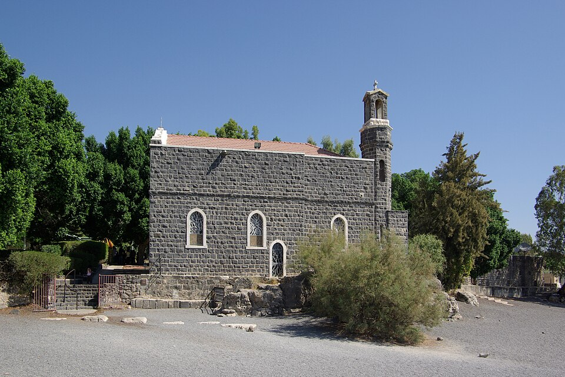
Итак, если мы размышляем о том, что нужно делать, становится ясно, что нам не нужна какая-то выдуманная нами другая Церковь. Необходимо, скорее, обновление веры в данную нам реальность Иисуса Христа в Таинстве. […]
Кризис, вызванный многочисленными случаями злоупотреблений со стороны священников, подталкивает к тому, чтобы считать Церковь чем-то неудавшимся, что мы теперь сами должны основательно взять в руки и заново устроить. Но Церковь, сделанная нами самими, не может быть надеждой.
Сам Иисус сравнил Церковь с рыболовной сетью, в которой есть хорошие и плохие рыбы, которые в конце концов должны быть отделены самим Богом. Рядом стоит притча о Церкви как о поле, на котором растёт хорошая пшеница, посеянная самим Богом, а также плевелы, которые «враг» тайно посеял там же. Действительно, плевелы на поле Божием, то есть в Церкви, чрезмерно заметны, и плохие рыбы в сети тоже показывают свою силу. Но всё же поле остаётся полем Божиим, а сеть – рыболовной сетью Божией.
И во все времена есть не только плевелы и плохие рыбы, но и посев Божий и хорошие рыбы. Провозглашать и то, и другое с настойчивостью – это не ложная апологетика (защита), а необходимое служение истине.
В этой связи необходимо указать на один важный текст в Откровении Иоанна. Там дьявол охарактеризован как обвинитель, который день и ночь обвиняет наших братьев перед Богом. (Откр 12,10) Апокалипсис тем самым вновь берёт мысль, которая стоит в центре обрамляющего рассказа Книги Иова. (Иов 1 и 2,10; 42,7-16) Там рассказано, что дьявол пытался перед Богом очернить праведность Иова как лишь внешнюю. […] Для христиан ясно, что Иов, который для всего человечества стоит перед Богом как пример, есть Иисус Христос. В Апокалипсисе нам представлена драма человека во всей её широте. Творцу-Богу противостоит дьявол, который очерняет всё человечество и всё творение. Он говорит не только Богу, но прежде всего людям: смотрите, что сотворил этот Бог. Якобы добрым творением. На деле же оно в своей целостности полно страдания и отвращения. Очернение творения на деле есть очернение Бога. […]
Сегодня в обвинении против Бога речь прежде всего идёт о том, чтобы очернить Его Церковь как целое и так отвратить нас от неё. Идея Церкви, сделанной нами самими и лучшей, на деле есть предложение дьявола, которым он хочет отвратить нас от живого Бога посредством лживой логики, в которую мы слишком легко попадаемся. Нет, Церковь сегодня не состоит только из плохих рыб и плевел. Церковь Божия существует и сегодня, и именно сегодня она есть орудие, через которое Бог нас спасает. Очень важно противопоставить лжи и полуправдам дьявола всю правду: да, в Церкви есть грех и зло. Но есть и сегодня святая Церковь, которая нерушима. Есть и сегодня много смиренно верующих,25 страдающих и любящих людей, в которых являет Себя истинный Бог, любящий Бог. Бог и сегодня имеет Своих свидетелей («martyres») в мире. Нам нужно только бодрствовать, чтобы их видеть и слышать.
Слово «мученик» заимствовано из процессуального права. В процессе против дьявола Иисус Христос есть первый и подлинный свидетель Бога, первый мученик, за которым с тех пор последовали бесчисленные. Церковь сегодня больше, чем когда-либо, есть Церковь мучеников и тем самым свидетель живого Бога. Если мы бдительным сердцем осмотримся и прислушаемся, мы можем повсюду сегодня найти свидетелей – особенно среди простых людей, но также и на высоких ступенях Церкви, которые своей жизнью и страданием стоят за Бога. Это – леность сердца, что мы не хотим их замечать. К великим и существенным задачам нашей евангелизации относится то, чтобы, насколько мы можем, создавать места жизни веры и прежде всего находить их и признавать. […]26 Папа-эмерит Бенедикт XVI
25 Когда Иисус у Мк 9,42 предостерегает: «соблазнить одного из малых сих», Он имеет в виду «простых верующих, которых может сбить с пути интеллектуальная гордыня тех, кто мнит себя умными». (Из полного текста, там же.)
26 kath.net/pl, 2019.
Я – мать всех детей этого мира; что ты поносишь меня, мир? Я была тоской всех времён. Я – дорога всех их дорог: по мне тысячелетия идут к Богу. Гертруд фон Лефорт
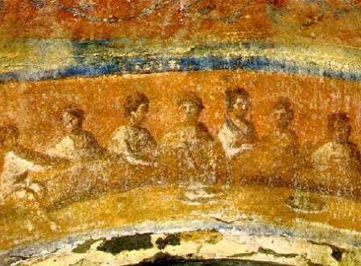
Святая Жертва Мессы в катакомбах
Преследуемая Церковь
Блаженная сестра Святого Креста Зденка Шелингова,27 родившаяся в 1916 году в селе Крива (Чехословакия), – пример для бесчисленного сонма мучеников, которые принесли свою жизнь в жертву из любви ко Христу и Его Церкви.28
Сестра Зденка обладала исключительным душевным равновесием, и из её глаз исходило что-то невероятно таинственное. Нежная, скромная улыбка, присущая ей, стала для неё лейтмотивом, так что дневник она начала словами: С улыбкой срывай маленькие розы боли, с улыбкой говори, с улыбкой помогай, с улыбкой принимай несправедливости … С улыбкой скрывай всё, что тебе больно … С улыбкой ступай на Голгофу. Там ты найдёшь Того, кто каждую злобу, каждую ложь, каждую человеческую ошибку знал гораздо раньше тебя.
Насколько глубоко её жизнь была укоренена в жертве Иисуса, показывают также следующие слова: За тёмными тучами сияет моё любимое солнце … От алтаря Господа я иду к алтарю моей работы, к завтраку, а затем в лазарет. Везде я должна продолжать жертву алтаря – без страха и с радостью.
С целью уничтожить Церковь коммунисты с 1950 года распустили все монастыри и духовные семинарии. 20 февраля 1952 года это случилось: в больнице, где работала сестра Зденка, объявили тревогу. Минувшей ночью из больницы бежал пациент, тяжко замученный пытками священник Штефан Коштиал. Полиция заняла даже часовню, в которой сёстры как раз присутствовали на Святой Мессе, и сестра Зденка подумала: Вот и пришло время – теперь уйду и я, ибо именно она помогла священнику бежать. Однако незаметную сестру поначалу не заподозрили. Лишь девять дней спустя её действительно арестовали. Вторая попытка бегства, которую она подготовила на тот день для других трёх священников и трёх семинаристов, была раскрыта. В тюрьме последовали четыре месяца жестоких допросов. Сестру Зденку неоднократно жестоко пытали и затем, покрытую ранами, тащили обратно в камеру.
Однажды, когда её почти до смерти избивали, она прошептала одной сокамернице: Прощение – величайшее в жизни.
Когда органы юстиции увидели, что сестра Зденка из-за жестоких пыток и трёх с половиной лет в пяти тюрьмах смертельно больна, решили 16 апреля 1955 года условно освободить монахиню. Правительство ни в коем случае не желало, чтобы её считали мученицей.
Последние три месяца сестра Зденка провела в онкологическом отделении. Она много молилась и, несмотря на сильные боли, излучала глубокий покой.
В ночь с субботы на воскресенье, 31 июля 1955 года, состояние больной ухудшилось, и поскольку она почувствовала, что её жизнь подходит к концу, она рано утром попросила Святого Причастия. Спокойно и тихо умерла сестра Зденка в возрасте 38 лет, в то время как в часовне совершалась Святая Жертва Мессы.29
27 Двоюродная бабушка о. д-ра Бернхарда Вошицкого OCist (Хайлигенкройц).
28 Мученики – знак того, что Бог жив и всегда присутствует среди нас. Его милосердная любовь открывается в Иисусе Христе, который обещал, что не отвратится от Своей Церкви и от тех, кто решился верно следовать за Ним: «Я с вами во все дни до скончания века» (Мф 28,20). Итак, Его присутствие ощутимо в Его преследуемых учениках: «Савл, Савл! что ты гонишь Меня? Он сказал: кто Ты, Господи? Господь же сказал: Я Иисус, Которого ты гонишь» (Деян 9,4-5). (Из Gott oder Nichts кардинала Роберта Сары)
29 Ср. Triumph des Herzens Nr. 78.
Святой Архангел Михаил, защитивший на небе престол Всевышнего от нападения Люцифера, защити на земле наместника Бога, Папу, и католическую Церковь. Аминь.
Обращение одного актёра
Среди примеров подлинных обращений, которые произошли благодаря труду св. падре Пио (1887 – 1968) в Сан-Джованни-Ротондо, особенно выделяется обращение актёра Карло Кампанини. […]
Путь Кампанини к обращению был нелёгким. Он родился в бедной семье, но имел очень благочестивую мать. Карло рассказывает: Если я когда-либо сделал что-то доброе, то лишь потому, что она оттуда, сверху, молилась за этого несчастного сына. Кто знает, что стало бы со мной без её молитв. […]
«Искра от падре Пио», как он сам говорит, зажглась в нём, когда ему было 19 лет. Тогда он работал в Аргентине для театральной труппы из Пьемонта. Однажды он сказал своему другу: верить в Бога было просто, пока можно было встретить таких великих святых, как, например, Франциск Ассизский. Но сегодня, к сожалению, великих святых больше нет.
Его собеседник ответил: Ну, святые всё же есть. У нас есть один в Италии: его зовут падре Пио. Капуцин, который носит раны Христовы и приносит свои страдания в жертву за мир. Эти слова глубоко поразили Карло.
Встреча Кампанини с падре состоялась несколько лет спустя. Он сам рассказывал в молитвенных группах падре Пио: Я сбился с пути, потому что из десяти заповедей нашего Господа я мог принять лишь восемь; две другие мне мешали, и поэтому я отверг их все и жил как зверь. […]
В конце 1949 года я достиг вершины своей славы, снимался сразу в трёх фильмах, все мне завидовали и говорили: вам хорошо, среди всех этих красивых женщин, с их дорогими машинами … Могу сказать лишь одно: каково мне было. Я ненавидел свою жизнь.
10 января 1950 года я сел в машину и поехал к падре Пио. Я записался на исповедь и ждал. Очередь дошла до меня. Когда я хотел открыть рот, падре Пио сказал мне: Расскажи мне всё, начиная с 1946 года. Вы можете себе представить, каково мне было.
Пока я говорил, я смотрел в пол. Он сказал мне: Смотри на меня! Смотри мне в лицо. Но я просто не мог. Тогда падре сказал: Ты стыдишься меня, ничтожного, а Его ты оскорбил, не задумываясь. […] Он хотел услышать всё. И только когда я пообещал ему изменить всю свою жизнь, он дал мне отпущение. С того дня я по-настоящему начал жить.
Презирайте ваши искушения и не задерживайтесь на них. Представьте себе Иисуса распятого в ваших объятиях и в вашем сердце, целуйте Его рану в боку и говорите при этом: Вот моя надежда, вот живой источник моего счастья. Я держу Тебя, мой Иисус, и не отойду от Тебя, пока Ты не приведёшь меня в безопасность. св. падре Пио
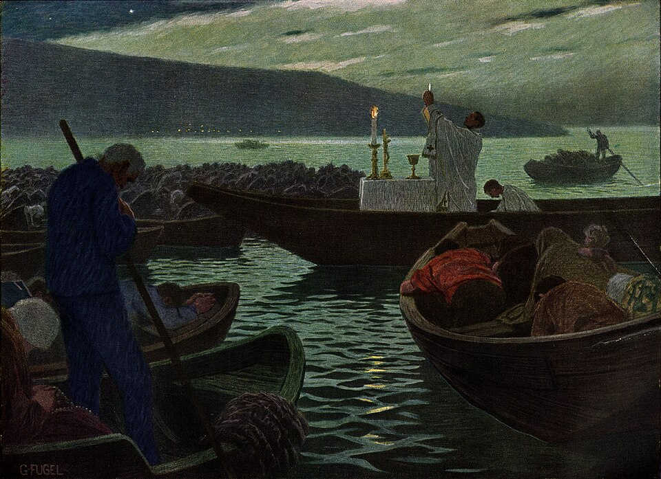
Ночная месса преследуемых (Гебхард Фугель, около 1920)
Святая Месса
Падре Пио во время пребывания Карло в Сан-Джованни-Ротондо не только возвратил его к Божией благодати, но и направлял его на первых шагах новой жизни. Краеугольным камнем он положил Святую Евхаристию.
Кампанини открыто признаёт, что он не постиг ни ценности Святой Мессы, ни ценности Святого Причастия и, как и многие другие, думал, что можно быть хорошим христианином, даже не ходя на Святую Мессу.
Когда он наблюдал за священником у алтаря, как тот смотрит на освящённую Гостию, он спрашивал себя: зачем эти слёзы и эта кровь, которая капает с его рук? Почему он так страдает? Почему изо дня в день являет такое болезненное свидетельство на глазах у людей?
Актёр рассказывает: Однажды, пока я задавал себе эти вопросы, я отчётливо услышал в моём сердце голос: Посмотри и ты на то распятие. […] Сколько раз ты опирался на тот венец из терний, чтобы вонзить его ещё глубже в Его плоть; сколько раз и ты бил молотком по тем раненым рукам и ногам?
Я начал плакать и охотнее всего совершил бы общую исповедь перед всеми этими людьми в церкви. Я почувствовал боль, какой никогда прежде в жизни не знал. И вместе с тем мне стало ясно, что я не получил никакой новой вести: те слова напомнили мне, что ещё в детстве на уроках катехизиса мне говорили, что Иисус умер за нас и что Его жертва обновляется в Святой Мессе. И мне предстояло получить ещё один знак.
Утром перед моим отъездом я подошёл к алтарю, чтобы принять Святое Причастие. Когда падре подал мне Гостию, я почувствовал, что она жжёт мне язык, как будто он положил мне на него факел.
В способе принимать Святое Причастие должно отражаться то любящее благоговение и та деликатность, с которыми Церковь окружает своего Божественного Жениха под неприметными видами хлеба и вина. Из Конституций капуцинок Вечного поклонения в Зальцбурге
Я спрятался за церковью, чтобы скрыть мои слёзы радости и умиления. Я поистине ощутил присутствие Бога. В тот день я обещал Иисусу в благодарность за то, что Он дал мне постичь дар Святой Евхаристии, что я буду ежедневно ходить на Святую Мессу и причащаться.
Когда я вернулся в Рим, мне сказали, что я преувеличиваю и что становлюсь фанатиком, ибо даже Церковь требует одного причастия в год и Святой Мессы по воскресеньям. Но я остался верен моему обещанию.30
Любовь к страданию
Падре Пио многому научил Кампанини, но то, что поразило его больше всего и что он считает самым важным учением, – это любовь к страданию. Однажды падре сказал ему на исповеди: Сын мой, если бы человечество могло постичь ценность страданий, люди уже не стремились бы к радостям, а искали бы только боли.
Карло признаётся, что он был ужаснут этими словами святого; он не мог их понять. Но по мере того как со временем он всё ближе сходился с падре, он усвоил это учение. Он говорит: Я видел невыразимое страдание падре и видел, что он с радостью приносит его в жертву ради спасения наших душ. Тогда и я постепенно начал понимать, что, несмотря на моё ничтожество, я через моё страдание могу принести нечто Господу вселенной.31
30 Сотни тысяч людей в глубоком потрясении присутствовали на Святой Мессе падре Пио в Сан-Джованни-Ротондо, видели его слёзы, его кровоточащие стигматы и при этом ощутили нечто от необъятной драмы, которая совершается при обновлении жертвы Голгофы.
31 «Der Padre», том 1, автор P. Marcellino Iasenza Niro, 2006.
Ежедневное приношение
Вечный Отче, через чистейшие руки Марии возлагаю я в чашу, которую сегодня каждый священник поднимает на алтаре, мои мысли, мою работу, мои труды и страдания, моё настоящее, моё прошлое, моё будущее, все мои грехи, всех моих близких, все души в мире, души в чистилище, саму смерть.
Приношу Тебе каждый удар моего сердца, каждый вздох, каждый шаг, каждое слово, в намерении, чтобы Ты превратил каждое из этих моих действий в столько же актов любви в возмещение за грехи мира. Дай, чтобы в соединении с Твоим Сыном Иисусом Христом мой день был непрерывной Мессой, постоянной жертвой,32 вечным Причастием, чтобы воздать удовлетворение Твоей божественной справедливости! Аминь.33
32 Как Иисус ежедневно обновляет Своё всесожжение в Святой Мессе, так и нам позволено при Святом Жертвоприношении Мессы обновлять наше соответствующее нашему состоянию посвящение, которое мы приносим Небесному Отцу в соединении с жертвой Христа. Всякое прославление, всякая просьба и всякое приношение подобны черпаку, с помощью которого мы снова и снова черпаем новые благодати из безграничных богатств сердца Божия.
33 Imprimatur: 28.12.1970.
Божественная звезда и брачная душа
Иисус, Спаситель, Он звезда моя.
Жить лишь для Него – о, это я хочу с радостью.
Не только с неба светит Он мне,
но глубоко в сердце – непрестанно.
Однажды Он был звёздочкой в святом лоне,
скрыт как человек и всё же БОГ, всемогущий и великий.
Вечным решением от века предназначено,
чтобы СЛОВО БОЖИЕ стало Младенцем.
Святая Дева Его родила;
МАРИЯ – её имя, БОГ её избрал.
Она меня так любит и ведёт меня к Звезде,
о Его Матерь, как же я её люблю!
Не должен ли мир в изумлении замереть?
Ведь она видела звезду небес на земле!
Ходящий в любви, в божественной милости,
чтобы светить овечкам в нищете и вине.
На Голгофе – я не могу понять –
моя звезда на Кресте любяще бледнеет.
О, теперь так темно и ночь в мире,
но уже через три дня Он всё озарит.
Теперь Он у Отца в небесах
и светит полнотой благости всему миру.
Но Он обещал, что останется и здесь,
сокрытый в дарохранительнице, там Он светит мне.
Надо только поспешить в церковку,
там Он живёт в любви и ждёт дитя.
В благоговении и изумлении я преклоняю колени,
пока Он не спросит меня: «Дитя Моё, чего ты хочешь от Меня?»
«О Звезда, о Звезда, пусть овечки найдут путь к Тебе!»
Послушайте, что Он отвечает мне:
«Люби и страдай и молись об этом,
тогда Я введу их в небесные врата!»
Я спрашиваю Звезду: «Скажи же мне,
что я значу для Тебя?»
И слышу, как Он радостно говорит мне:
«Дитя, девочка, Невеста Моего сердца, нравится ли тебе так?»
Но теперь Он хочет знать, люблю ли я Его.
«О Звезда, Ты знаешь всё, и Тебя одного я люблю!»
И если бы мне дали золото и деньги, даже целые страны,
я бы всё равно сказала: это ведь неправда.
Звезде одной принадлежит всё, да, всё,
и – подивись, о чудо! – Он мой.
От дыхания Его уст возникают миры,
ни одна мысль не может ускользнуть от Него.
Бывает, мне порой очень страшно и тяжело,
но Ему я хочу доверять всё больше.
Только из любви Он посылает мне страдание,
ведь Он знает цену для вечности.
И если бы я встретила человека совсем опустившегося,
я бы сразу спросила: «Да ты что, попал в руки разбойников?
Скорее, пойдём к Звезде, Он любит и тебя,
и скоро ты будешь так же счастлив, как я».
Когда же однажды кончится моя жизнь,
тогда пусть светит мне моя звезда в небесный дом.
Моё сердце готово разорваться от ликования и счастья,
наконец дома, я совершенно в восторге.
Ангелы на небе поют громко:
«О, смотрите, смотрите, идёт Невеста!»
Он с любовью прижимает меня к божественному сердцу
и отирает с моих глаз все слёзы и боль.
Теперь я живу у Звезды в блаженстве
и справляю с Ним брачный пир в вечности.
Благодарение ГОСПОДУ, Который увидел во мне
Свою маленькую возлюбленную Невесту.
И если я огорчила Его Святейшее Сердце,
то хочу лишь плакать в раскаянии и скорби.
Тогда пусть Он светит мне красным светом святой Крови
и омывает меня чистой в пурпурном огне.
И тебе, душа моя, Он не далёк,
Он ждёт с любовью и так тебя любит!
Моя Звезда смотрит на меня от вечности,
неужели ты думаешь, что Он не думает и о тебе? Капуцинки Вечного поклонения
Се, гряду скоро, и возмездие Моё со Мною, чтобы воздать каждому по делам его. … Я есмь корень и потомок Давида, звезда светлая и утренняя. И Дух и невеста говорят: приди! … Ей, гряду скоро. Аминь. Ей, гряди, Господи Иисусе! Откр 22,12-20
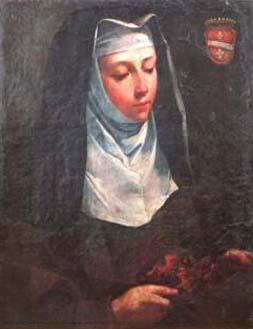
Блаженная Анджелина из Маршано
Молитва о духовных призваниях
Господи Иисусе, как Ты некогда призвал первых учеников и сделал их ловцами людей, так и ныне пусть непрестанно звучит Твоё благое приглашение: «Приди и следуй за Мной!» Даруй юношам и девушкам благодать охотно отвечать на Твой зов! Поддержи наших епископов, священников и монашествующих в их трудном пастырском служении. Дай стойкости нашим семинаристам и всем, кто стремится осуществить идеал полной самоотдачи в Твоём служении. Пробуди в наших общинах миссионерский дух. Пошли, Господи, работников на Твою жатву и не допусти, чтобы человечество из-за недостатка священников, миссионеров и монашествующих слишком мало познавало Евангелие.
Мария, Матерь Церкви, образец всякого призвания, помоги нам ответить «да» Господу, который нас призывает, и сотрудничать в Его божественном плане спасения. Аминь. св. Папа Иоанн Павел II
Святая Месса – мой рай на земле! св. Лаврентий Бриндизийский
Блаженны званые на брачную вечерю Агнца. Откр 19,9